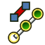
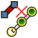
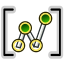
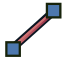

Cables Workbench/it
Introduzione
L'Ambiente Cables  è un insieme di strumenti per la modellazione di impianti elettrici nei progetti di progettazione architettonica.
È progettato per aiutare a instradare i cavi all’interno degli edifici o di altri oggetti e per costruire modelli di cavi con la possibilità di realizzare connessioni tra singoli fili.
È un ambiente di lavoro complementare.
è un insieme di strumenti per la modellazione di impianti elettrici nei progetti di progettazione architettonica.
È progettato per aiutare a instradare i cavi all’interno degli edifici o di altri oggetti e per costruire modelli di cavi con la possibilità di realizzare connessioni tra singoli fili.
È un ambiente di lavoro complementare.
Questo insieme di strumenti può essere utilizzato per creare scatole elettriche o altri elementi elettrici pronti all’uso (si spera che l’elenco degli elementi venga ampliato in futuro). Questi elementi possono essere collegati tramite cavi completamente parametrici con profili, numero di fili e spessori differenti. Sono disponibili alcuni profili di cavo predefiniti, ma è anche possibile creare profili personalizzati non standard tramite un semplice file CSV.
I modelli realizzati con questo ambiente di lavoro consentono di riposizionare facilmente gli elementi senza interrompere le connessioni. I cavi possono adattare la loro forma alle nuove posizioni. Tuttavia, questa funzionalità non è ancora perfetta.
Questo ambiente di lavoro mira a essere compatibile con il BIM Workbench (gli oggetti solidi creati qui dovrebbero avere gli stessi attributi e proprietà di base degli altri oggetti BIM: materiali, tipo IFC e attributi IFC, ecc.), ma può essere utilizzato anche per scopi diversi dalla progettazione architettonica. A partire dalla versione 0.3.0, l’ambiente di lavoro è diventato inoltre più adatto alla modellazione delle connessioni tra PCB, all’interno di macchine, ecc. Consente di creare librerie personalizzate di connettori, scatole e dispositivi elettrici (qualsiasi aiuto nella creazione, ad esempio, di un insieme di connettori già pronti è molto gradito).

Esempio di scatole e cavi montati a parete
La versione animata si trova qui.
{kind=link}
Esempio di cavo piatto a tre conduttori:
Cavo multimateriale, la sua forma e la sua polilinea di base, con il profilo e i trefori.
{kind=link}
{kind=link}
A sinistra: esempio di scatola di distribuzione con MCB.
A destra: esempio di un cavo terminato con dei connettori
Installazione
Questo ambiente può essere installato dall'Addon Manager  . Vedere anche Installazione di altri ambienti per l'installazione manuale.
. Vedere anche Installazione di altri ambienti per l'installazione manuale.
Strumenti
Gli strumenti di Cables sono suddivisi in alcuni gruppi a seconda del loro scopo.
Strumenti per la creazione e la manipolazione dei fili
 WireFlex: Crea un nuovo oggetto WireFlex esteso tra due o più vertici/oggetti selezionati.
WireFlex: Crea un nuovo oggetto WireFlex esteso tra due o più vertici/oggetti selezionati.
 Aggiungi vertice: crea un vertice aggiuntivo sul bordo WireFlex selezionato.
Aggiungi vertice: crea un vertice aggiuntivo sul bordo WireFlex selezionato.
 Elimina vertice: Elimina il vertice WireFlex selezionato.
Elimina vertice: Elimina il vertice WireFlex selezionato.
 Collega vertice: Collega il vertice WireFlex selezionato al vertice|oggetto esterno.
Collega vertice: Collega il vertice WireFlex selezionato al vertice|oggetto esterno.
 Rimuovi collegamento vertice: Rimuove il collegamento del vertice WireFlex selezionato dal vertice|oggetto esterno.
Rimuovi collegamento vertice: Rimuove il collegamento del vertice WireFlex selezionato dal vertice|oggetto esterno.
-  Collegare il Wire al terminale: Consente il fissaggio dell'estremità del cavo al terminale (introdotto nella versione 0.3.0).
{kind=link}
-  Scollegare il Wire dal terminale: Rimuove il collegamento finale del cavo dal terminale (introdotto nella versione 0.3.0).
{kind=link}
-  CompoundPath: Crea un nuovo oggetto CompoundPath basato sugli oggetti selezionati (introdotto nella versione 0.2.0). Crea un oggetto wire basato su un gruppo di altri oggetti wire. La sua forma topologica è un composto di forme di wire o di una singola forma di wire.
{kind=link}
 Modifica: modifica l'oggetto WireFlex attivo (introdotto nella versione 0.2.0).
Modifica: modifica l'oggetto WireFlex attivo (introdotto nella versione 0.2.0).
Strumenti per realizzare cavi e altri elementi già pronti
 Profilo: aggiunge un nuovo profilo di un cavo al documento corrente.
Profilo: aggiunge un nuovo profilo di un cavo al documento corrente.
 Cavo: Aggiunge un nuovo cavo basato sul percorso e sul profilo selezionati.
Cavo: Aggiunge un nuovo cavo basato sul percorso e sul profilo selezionati.
 Conduttore: Aggiunge un nuovo cavo conduttore basato sul percorso selezionato (introdotto nella versione 0.2.0).
Conduttore: Aggiunge un nuovo cavo conduttore basato sul percorso selezionato (introdotto nella versione 0.2.0).
 Scatola: Aggiunge una nuova scatola per cavi parametrica.
Scatola: Aggiunge una nuova scatola per cavi parametrica.
 Connettore: aggiunge un nuovo connettore per cavi universale parametrico.
Connettore: aggiunge un nuovo connettore per cavi universale parametrico.
 Punto luce: aggiunge un nuovo punto luce universale parametrico per il cavo.
Punto luce: aggiunge un nuovo punto luce universale parametrico per il cavo.
 Dispositivo elettrico: aggiunge un nuovo dispositivo elettrico (introdotto nella versione 0.3.0).
Dispositivo elettrico: aggiunge un nuovo dispositivo elettrico (introdotto nella versione 0.3.0).
 Materiali: aggiunge un set predefinito di materiali multipli al documento corrente.
Materiali: aggiunge un set predefinito di materiali multipli al documento corrente.
Oggetti con dipendenza
Questi oggetti non possono essere creati direttamente. Sono progettati per coesistere con oggetti Cable Box, Cable Connector, Cable Light Point o Electrical Device a seconda della loro configurazione.
-  Terminale: contiene un oggetto terminale per cavi parametrico (introdotto nella versione 0.3.0).
{kind=link}
 SuppLines: Contiene un oggetto SuppLines (introdotto nella versione 0.3.0).
SuppLines: Contiene un oggetto SuppLines (introdotto nella versione 0.3.0).
Strumenti di supporto
Questi strumenti vengono utilizzati principalmente per organizzare e semplificare i collegamenti con altri oggetti. Possono essere utilizzati con successo anche con altri ambienti.
 Punto di supporto: aggiunge un punto di supporto universale.
Punto di supporto: aggiunge un punto di supporto universale.
 Support Line: Adds a universal support line.
Support Line: Adds a universal support line.
- Attach in Place: Makes an attachment without changing global placement of an object (introduced in version 0.3.0).
{kind=link}
- Deactivate Attachment: Deactivates attachment of selected objects (introduced in version 0.3.0).
{kind=link}
Strumenti esterni
 Attiva/disattiva griglia: cambia la visibilità della griglia.
Attiva/disattiva griglia: cambia la visibilità della griglia.
Note
Questo ambiente è attualmente in fase alpha. È possibile che si verifichino alcuni bug che potrebbero danneggiare il modello. Alcune proprietà dei modelli potrebbero cambiare in futuro e danneggiare i modelli creati con la versione attuale. Anche le pagine Wiki relative a questo workbench potrebbero subire modifiche significative in futuro. Qualsiasi commento e nuova idea è ben accetto. Si prega di inviare commenti e segnalazioni tramite i canali specificati in Riferimenti.
Descrizione del flusso di lavoro di base
- Create endpoints for cables like: Cable Box or Cable Light Point and arrange them in a 3D space.
- Create base wires connecting created endpoints with WireFlex and arrange them in a 3D space with the help of Support Lines or Support Points.
- Create Cable Profiles suitable for the project.
- Create Cables based on existing base wires and profiles.
- Color the cables with the predefined or customized Cable Materials.
- Finally (and optionally) connect chosen single cable wires using Cable Connectors.
Tutorial ed esempi
Esempi di documenti FreeCAD con cavi:
- Esempi forniti con il codice sorgente
Esempi di immagini animate:
- Esempio di un flusso di lavoro semplice
- Esempi di spostamenti dei WireFlex
- Esempio di utilizzo di un Cable Box
- Esempio di utilizzo un Cable Connector
Tutorial:
Video tutorial/esempi:
Riferimenti
- Autore:
- Codice sorgente su GitHub: https://github.com/sargo-devel/Cables
- Forum di FreeCAD: https://forum.freecad.org/viewtopic.php?t=94090
- Segnalazione dei bug: segnala i bug qui